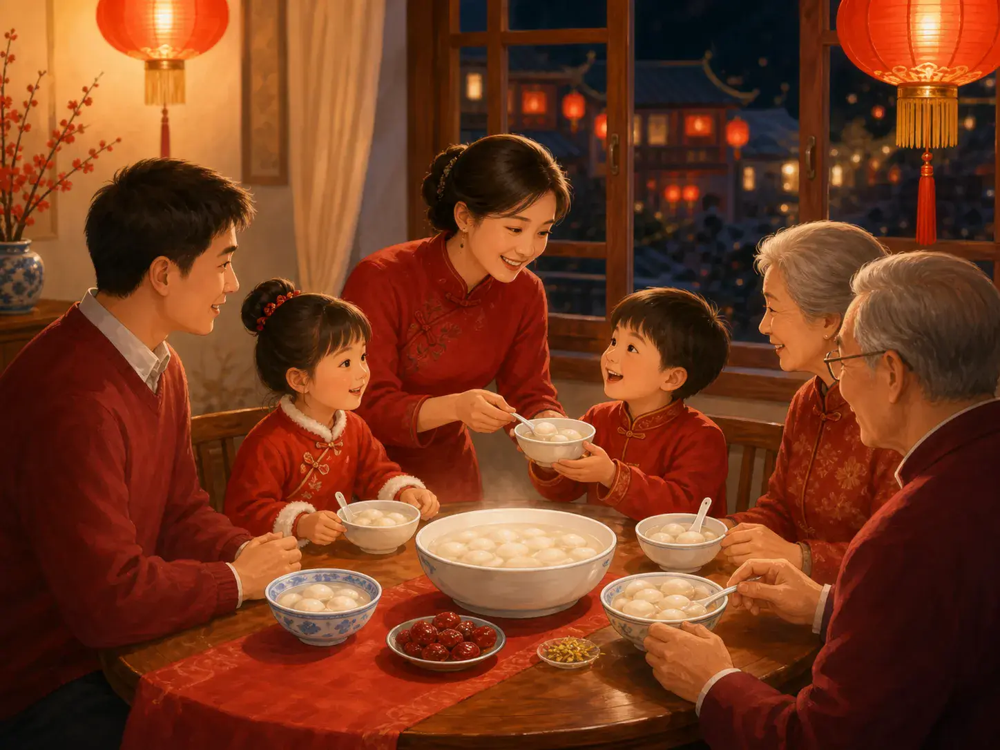
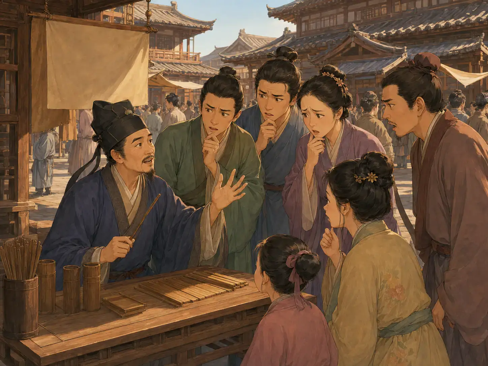
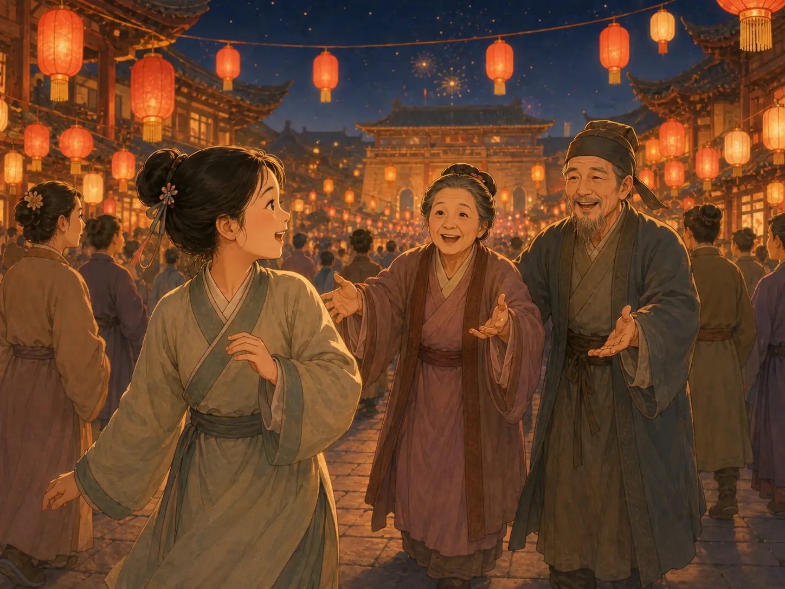

元宵节：长安灯火的传说
Lantern Festival: The Night Chang'an Glowed
Page 1
新年的第一个月圆之夜
The New Year's First Full Moon

At Lantern Festival, families often share round yuanxiao or tangyuan and enjoy being together.
元宵节在农历正月十五。这是中国新年开始后的第一个月圆之夜，也是春节庆祝活动接近尾声的时候。
天黑以后，街道和公园被花灯照亮。人们和家人一起出门赏灯、猜灯谜，还会吃圆圆的元宵或汤圆。因为是圆形，元宵和汤圆常常象征着“团圆”，也就是一家人相聚在一起。
花灯为什么会成为这个夜晚的重要部分？人们讲过不止一个故事。下面就是其中一个流传已久的民间传说。
Lantern Festival falls on the fifteenth day of the first lunar month. It is the first full-moon night of the Chinese New Year and comes near the end of the holiday season.
After dark, streets and parks glow with lanterns. Families go out to see the lights, solve lantern riddles, and eat round treats called yuanxiao or tangyuan. Because they are round, yuanxiao and tangyuan have come to symbolize tuanyuan: family reunion and togetherness.
Why did lanterns become such an important part of this night? People have told more than one story. Here is one old folk legend.
Page 2
一个吓人的预言
A Frightening Prediction

In Chang’an, the Han dynasty capital located in present-day Xi’an, Dongfang Shuo gives every visitor the same warning: a terrible fire is coming.
一个古老的元宵节民间传说，讲的是一位名叫元宵的年轻宫女。元宵很久没有见到父母了，她非常想念他们。可是，想离开皇宫并不容易。
宫里住着一位机智的艺人和谋士。他以玩笑、巧计和敏捷的头脑闻名，有点像宫廷里的弄臣。他叫东方朔。听说元宵的事以后，他决定帮助她。
东方朔来到当时的都城Cháng'ān · 中国古代都城，位置在今天的西安。，也就是今天的Xī'ān · 中国著名古都，古代长安所在地。，摆起了算命摊。可是，每个来找他算命的人，都得到同一个吓人的预言：长安将发生一场可怕的大火！ 很快，全城的人都在谈论这件事。
忧心忡忡的皇帝问该怎么办，东方朔便提出了一个巧妙的办法。
“新年第一个月的十五晚上，”他说，“到处挂起红灯笼。点亮街道，再放焰火、制造响声。这样从远处看，整座城就像已经着火了。”
皇帝答应了。
One old Lantern Festival legend tells of a young palace maid named Yuanxiao. Yuanxiao had not seen her parents for a long time, and she missed them terribly. But leaving the emperor’s palace was not easy.
At the palace lived a witty entertainer and adviser who was famous for his jokes, tricks, and quick thinking—something like a court jester. His name was Dongfang Shuo. When he heard about Yuanxiao, he decided to help.
Dongfang Shuo went into Cháng'ān · 长安 · An ancient Chinese capital located in present-day Xi'an.—the Hàn cháo · 汉朝 · A major Chinese dynasty that lasted from 206 BCE to 220 CE. capital, located in present-day Xī'ān · 西安 · A major historic city and the modern location of ancient Chang'an.—and set up a fortune-telling stand. But everyone who came to him received the same frightening prediction: A terrible fire was coming to Chang’an! Soon the whole city was talking about it.
When the worried emperor asked what could be done, Dongfang Shuo suggested a clever trick.
“On the fifteenth night of the new year,” he said, “hang red lanterns everywhere. Light up the streets and fill the night with fireworks and noise. From far away, it will look as if the city is already on fire.”
The emperor agreed.
Page 3
人群中的呼喊
A Voice in the Crowd

In the legend, lanterns light the crowded streets as Yuanxiao hears her family calling.
那天夜里，长安灯火通明。红灯笼挂满城门和屋顶，街道到处亮着灯。城里城外的人们都来到街上观看，其中就有元宵的父母。
元宵走过人群时，忽然听见熟悉的声音在叫她的名字：“元宵！” 她转过身——父母就在那里。在明亮的灯笼和热闹的街道中间，元宵终于和家人团聚了。
那么，那场可怕的大火呢？它根本没有发生。也许东方朔从一开始就知道这一点。
后来，人们把这个民间故事当作元宵节张灯、聚会和家人团圆的一种解释。元宵节就在农历正月十五。
不管这个故事是否真的发生过，它的结尾仍然很符合今天的元宵节：新年开始以后，一家人在满天灯火下一起团聚。
That night, Chang’an glowed. Red lanterns hung from gates and rooftops. Lights filled the streets. Crowds came from inside and outside the city to watch. Among them were Yuanxiao’s parents.
As Yuanxiao moved through the crowd, she suddenly heard familiar voices calling her name. “Yuanxiao!” She turned—and there they were. In the middle of the bright lanterns and busy streets, Yuanxiao was finally reunited with her family.
And the terrible fire? It never came. Perhaps Dongfang Shuo had known that all along.
People later told this folk story as one explanation for the lanterns, crowds, and family reunions of the Lantern Festival, celebrated on the fifteenth day of the first lunar month.
Whether or not the story really happened, it ends with an idea that still fits the festival today: After the New Year begins, families come together under a sky full of light.